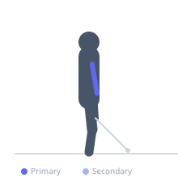
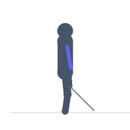

Exercise guide / High Cable Bicep Curl (Peak Curl)
High Cable Bicep Curl (Peak Curl)
The high cable peak curl is performed facing a high cable pulley, with the arm raised to shoulder height or above and the elbow flexed against the cable resistance. Because the cable pulls from behind and above, the bicep is under constant tension in the shortened position — unlike free weight curls which lose tension at the top. This makes it exceptional for training the bicep in its contracted peak position and is a classic bodybuilding pose and exercise.
Primary muscles
biceps brachii long head
biceps brachii short head
Secondary muscles
brachialis
Equipment
Cable Machine (High Pulley)


Starting position
- Stand side-on to a high cable pulley. Grasp the single handle with the inside arm, arm extended toward the pulley at shoulder height.
Setup
- Set the cable pulley at or slightly above shoulder height. Attach a single handle. Stand far enough from the stack to put tension on the cable at full extension.
Steps
- Step 1: Begin with the arm extended toward the cable at shoulder height.
- Step 2: Curl the forearm toward the shoulder by flexing the elbow.
- Step 3: Hold the peak contraction for one second, squeezing the bicep hard.
- Step 4: Extend the arm slowly back to the starting position.
Coaching cues
- Upper arm stays high and still
- Squeeze hard at the top
- Feel the peak contraction
Breathing
- Exhale on the curl, inhale on the return.
Range of motion
- Full elbow extension to maximum flexion.
Tempo
- 2-2-3-0 (2s hold at peak)
Common mistakes
- Upper arm dropping down during the curl, losing the high-cable advantage
- Using shoulder to assist
- Rushing through the peak
Safety
- Keep the upper arm stable — only the forearm should move
Training
- hypertrophy: 10–15 reps
- hypertrophy: 3–4 sets
- Rest: {'hypertrophy': 60}